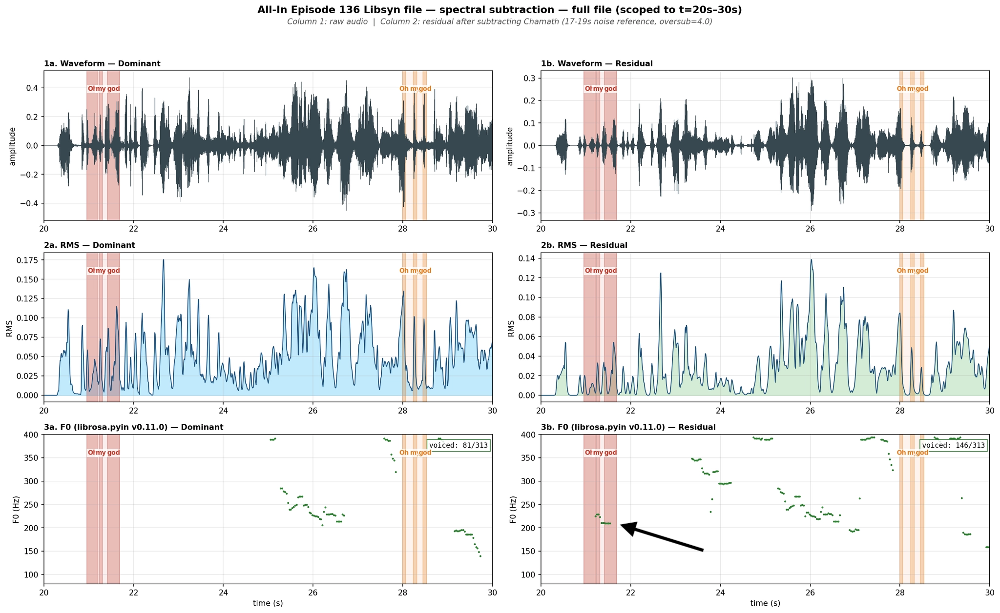

Ghost Audio
What: This page investigates why speech went untranscribed—a phenomenon I call Ghost Audio—and the effort to build tooling capable of finding and recovering these omissions across the entire All-In Podcast episode corpus.
Why: Ghost Audio quietly distorts dialogue flow, causal relationships, and conversational patterns that downstream models learn from. Because the resulting transcripts often appear clean and complete, these omissions can persist undetected while subtly altering the historical record.
Why Omissions Matter: Featuring The Empire Strikes Back (1980)
Movie Screenplay
Vader: "If only you knew the power of the dark side. Obi-Wan never told you what happened to your father."
Luke: "He told me enough. He told me you killed him!"
Vader: "No. I am your father."
Luke: "No. No. That's not true! That's impossible!"
Ghost Audio Transcript
Vader: "If only you knew the power of the dark side. Obi-Wan never told you what happened to your father."
Luke: "He told me enough. He told me you killed him!"
Luke: "No. No. That's not true! That's impossible!"
This is a staged example, but the impact is the same: ghost audio removes an entire segment of content from the transcript, quietly altering the intent and meaning of the speech around it.
Here, the transcript still reads cleanly. Nothing appears broken. Yet the central reveal disappears. A downstream model never learns that Vader says he is Luke's father, and may instead infer that Luke is reacting to his own accusation rather than to new information from Vader.
Why Omissions Matter: Featuring The Dark Knight (2008)
Movie Screenplay
Joker: "There's only minutes left, so you'll have to play my little game if you want to save one of them."
Batman: "Them?"
Joker: "You know, for a while there, I thought you really were Dent. The way you threw yourself after her."
Ghost Audio Transcript
Joker: "There's only minutes left, so you'll have to play my little game if you want to save one of them."
Joker: "You know, for a while there, I thought you really were Dent. The way you threw yourself after her."
YouTube ASR failed to transcribe a single-word response from Batman: "Them?". That response communicates a sudden shift in Batman's understanding: Joker has two hostages, not one.
The transcript reads cleanly. Nothing appears broken. The moment of realization — and the causal link between Joker's statement and Batman's reaction — is gone.
Discovery
In early 2026, I moved to Libsyn as the canonical source of truth for All-In Podcast episodes. Libsyn simplified the pipeline: full episodes without the short-form content commingled with All-In Podcast material across the two official YouTube channels.
Libsyn was intended as a going-forward source change. I ran a handful of older episodes through the pipeline as a spot check. In Episode 136, a short utterance from Friedberg around t≈20s — "Oh, my God." — was missing from the new Libsyn transcript and absent from my corpus. It existed in a late 2025 transcript generated from the YouTube file.
Moments later, guest Brad Gerstner says the exact same phrase. His line is missing from every transcript. I only know he said it because I was watching the video while investigating Friedberg's omission.
Ground Truth
Chamath: "...shortest that's the fattest, and the fattest that's the dumbest."
Friedberg: "Oh, my god."
Friedberg: "He's not even here. You can't do that. It's awful."
Gerstner: "Oh, my god."
Friedberg: "That's just bullying. That's awful."
Ghost Audio Transcript
Chamath: "...shortest that's the fattest, and the fattest that's the dumbest."
Friedberg: "He's not even here. You can't do that. It's awful."
Friedberg: "That's just bullying. That's awful."
I began calling this phenomenon Ghost Audio because Friedberg's speech is clearly audible, yet repeated attempts to reproduce it in the production pipeline ended the same way: extensive investigation, no transcript.
Most transcript errors leave fingerprints: ellipses, broken segment boundaries, lowercase continuations, third-person self-references, suspicious speaker turns. Ghost Audio leaves nothing. Speaker turns are distorted, context is wrong, relationships between ideas collapse — and the transcript reads as if nothing is missing. At training time, downstream examples teach the wrong relationships between prompts and completions.
Acoustic Confirmation
The audio was there. The investigation went through the acoustic stack before opening the decoder.
VAD onset and offset thresholds were adjusted to test whether tighter speech detection would surface the ghost. RMS energy confirmed voiced activity in both ghost regions. pYIN pitch detection found traces of Friedberg's voice at t≈21s after subtracting Chamath's voice from the signal. The pitch exists. It is not noise.

Libsyn spectral subtraction — pYIN F0 on raw (left) vs residual (right) — t=19–30s. Friedberg's pitch emerges in the ghost region after subtraction. Gerstner's region shows RMS activity but weaker pitch confidence.
An adjacent transcription pipeline was built using reference PyTorch Whisper because the production runtime uses CTranslate2, which does not expose logits. Cross-attention weights, filtered to audio-aligned heads, showed non-zero attention in both ghost regions — substantially more for Friedberg. The encoder saw the audio. The decoder was attending to it.

Whisper cross-attention filtered to audio-aligned heads. Attention spike at Friedberg's ghost region (t≈21s). Lower but present activity at Gerstner's (t≈28s). The decoder was looking at both timestamps.
A separate line of investigation projected the speaker embeddings onto a manifold to visualize how the ghost segments were being geometrically interpreted. Friedberg's ghost regions did not cluster with Friedberg's confirmed speech. They fell inside Chamath's cluster. The audio was not only short enough to destabilize the embedding — it was acoustically close enough to the wrong speaker that the speaker identity layer independently misread it. The ASR decoder and the speaker embedding space failed on the same audio for different reasons.
Ghost Audio is not an ASR problem. Independent systems failed on the same audio for different reasons. That shifted the investigation away from transcript accuracy and toward decoder behavior. The question was no longer "why was this word missed?" but "what does the decoder do when it encounters speech it cannot confidently transcribe?"
Decoder Fork
The cross-attention graph showed that the decoder was looking at the ghost regions. The next question was whether the missing words were impossible, or whether they existed in a losing decode path.
Rather than treating Whisper as a black box, I built PWW, an adjacent PyTorch Whisper pipeline that exposes decoder probabilities directly.
PWW showed that Friedberg's missing line was not impossible. After the timestamp anchor <|18.98|>, two viable futures existed: one matched the audio, and one skipped ahead to Friedberg's next line.
<|18.98|>PWW PROBEThe ground-truth path "Oh, my god." lost by only 5.75 percentage points. The winning path, "He's not even here.", is real: it is the line Friedberg speaks next. The decoder skipped his actual utterance, locked onto the following line, and scored it higher than the thing he said first.
This reframed Ghost Audio as a beam-path survival problem. The speech exists acoustically. A valid decode path exists. That path simply does not always survive into the final transcript.
The breakthrough came from the production WhisperX path itself.
Using WhisperX large-v3 with Beam=5, I ran the same Libsyn audio twice: once with decoder timestamp tokens disabled and once with decoder timestamp tokens enabled. The model, audio, beam size, alignment step, and production runtime were otherwise held constant.
With timestamp tokens disabled, the transcript jumped directly from:
18.873–19.914 And the fattest, that's the dumbest.
25.317–26.097 He's not even here.
The entire ghost region disappeared.
With timestamp tokens enabled, WhisperX recovered:
20.834–21.495 Oh, my god.
Timestamp tokens are not merely output metadata. They participate in decoding.
With WhisperX Beam=5 decoding, timestamp tokens appear to reduce the likelihood that faint speech events are skipped during beam-path selection.
Working hypothesis: timestamp tokens add temporal structure to the decode path. In ambiguous regions, that structure helps faint speech remain represented in the winning beam path rather than being silently omitted.
BERD-1
BERD-1 now uses decoder disagreement as the detection signal.
Instead of comparing production WhisperX against a separate beam=1 scout transcript, BERD-1 compares two production-equivalent WhisperX Beam=5 decodes:
without_timestamps=True.
without_timestamps=False.
Where the timestamp-token ON transcript contains speech that the timestamp-token OFF transcript skips, BERD-1 creates a candidate transcript repair.
BERD-1 does not automatically trust the timestamp-token ON transcript. It creates a review queue.
Each candidate can be accepted, rejected, or edited. Accepted repairs become canonical transcript edits.
Candidate
926.899–934.605
Because most of the posts, at least, you know, that our team engages in on Twitter are for mostly business purposes.
935.265–935.545
Right.
Canonical Repair
926.899–935.545
Because most of the posts, at least, you know, that our team engages in on Twitter are for mostly business purposes. Right.
Using two WhisperX Beam=5 decodes with a timestamp-token toggle, Episode 136 was processed in approximately 6m11s, compared to approximately 11m52s for the original Reference Whisper + Pyannote workflow — a 48% reduction in runtime — while still surfacing candidate transcript repairs through decoder disagreement.
PWW remains useful as an explanatory probe, but BERD-1 no longer requires a full-episode PyTorch Whisper sweep to identify candidate omissions. The detector is now production decoder disagreement itself.
Limitations
BERD-1 is a forensic prototype that compares transcript disagreement. It can operate using either two production WhisperX Beam=5 transcripts (timestamp tokens on/off) or a production WhisperX transcript paired with a Reference Whisper transcript.
The production-only workflow reduced GPU runtime by approximately 48% while still surfacing candidate transcript repairs for review. In Episode 136, BERD-1 identified 5 high-confidence ghost candidates using the default overlap threshold, expanding to 11 candidate repairs when the overlap threshold was reduced to zero. These reviews take seconds, and at corpus scale the additional human workload is both sustainable and justified.
Even so, some ghost regions, like Brad Gerstner's utterance, remain resistant to transcription. They were never transcribed across decoder configurations. BERD-1 can only review content that appears in at least one decode path. Speech that fails to survive any decoding configuration remains invisible to the system.
That's why the Reference Whisper option matters. The production-only workflow is faster and cheaper, but Reference Whisper introduces additional decoder divergence. While that divergence can manifest as localized hallucinations, it can also expose weak speech regions that never survive into production transcripts. In a forensic workflow, additional disagreement is often more valuable than transcript cleanliness.